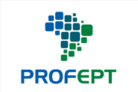

Mostra Gaúcha de Produtos Educacionais do Mestrado ProfEPT
Mural Interativo dos Trabalhos Aprovados
•
IFSUL • IFRS • IFFAR
📚 Total:
46
🔬 Linha 1:
32
🏛️ Linha 2:
14
📊
Estatísticas
☀️ Tema: Clean Light
🎨 Tema: Cosmic Dark
📌 Tema: Mural Cortiça
📐 Tema: Blueprint
🌿 Tema: Esmeralda EPT
🔍
✕
/
📑
Colunas
🧱
Mural
▦
Grade
☰
Lista
Ordenar:
Padrão (Planilha #01 - #46)
Mais Recentes Primeiro
Título (A-Z)
Instituição (IFSUL / IFRS / IFFAR)
Mais Curtidos ❤️
Instituição:
IFSUL
IFRS
IFFAR
Linha:
Linha 1 (Práticas)
Linha 2 (Memórias)
Mídia:
🎬 Vídeos
📖 Interativos
💾 Drive
Exibindo:
47 trabalhos
Limpar todos os filtros